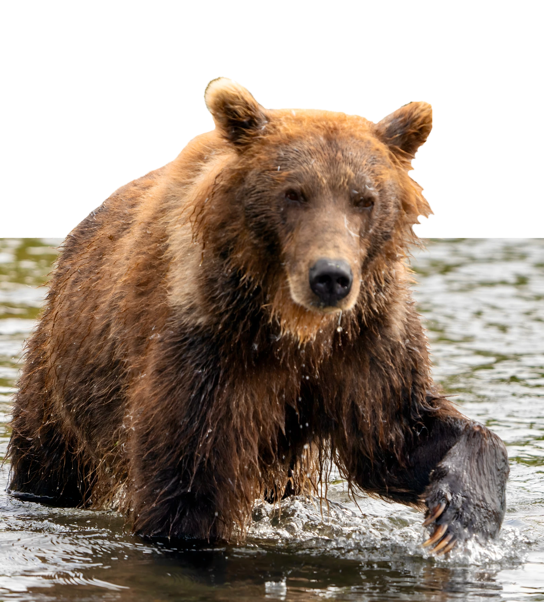

2 этаж гостиницы / всего 12 мест
2х местный номер с удобствами
250 000 ₽Гостиница в Петропавловске: двухместный номер с удобствами — душ и туалет в номере. Самый комфортный вариант, группа до 24 человек.
Выбрать размещениеКамчатка / 12–19 сентября 2027
Йога-тур с Юлией Батыцкой
8 дней от Петропавловска-Камчатского до Южно-Камчатского заказника. Нерка, которая краснеет в пресной воде. Более 200 бурых медведей на берегу и практики йоги с видом на озеро.

Фото: maxpeyn
Курильское озеро — крупнейшее в Евразии нерестилище нерки
Ежегодно в озеро заходит от 1,5 до 6 миллионов особей. У нерки есть удивительная способность — хоминг: рыбы находят путь из океана в родную реку — Озёрную, где когда-то вылупились из икринок. Попадая в пресную воду озера, нерка меняет цвет: тело становится алым, а плавники — чёрными. Из-за обилия рыбы вода в этот период действительно кажется красной. После нереста рыба погибает, но становится первой пищей для собственного потомства, замыкая цикл.
Обилие рыбы привлекает сюда огромное количество бурых медведей: в сезон нереста у озера собирается более 200 особей. Наблюдать за медведями, которые ловят рыбу прямо в воде, — одно из главных зрелищ, ради которых сюда едут туристы. Для безопасности посетителей оборудованы специальные смотровые площадки, а экскурсии идут вместе с инспектором заказника.
Всем, кто любит природу и йогу. Опыт практики не обязателен: занятия проходят в спокойном темпе и адаптируются под состояние группы. Пешие экскурсии — до 4 км в день без тяжёлого рюкзака.
Наблюдение за медведями идёт с оборудованных смотровых площадок и вместе с инспектором Южно-Камчатского заказника. Все передвижения по заказнику — только в составе группы по утверждённой программе.
Восхождение на вулкан в день 7 — опциональное и зависит от погоды и самочувствия группы. Сентябрь на Камчатке прохладный и ветреный: берите тёплые вещи даже для «летних» активностей.

Ведущая тура
Юлия — преподаватель йоги и ведущая этого тура. В программе поездки ежедневные практики: в Петропавловске, на берегу Курильского озера и в палаточном лагере — если позволяет погода, занятия проходят на открытом воздухе с видом на вулканы и озеро.
Практики идут в размеренном темпе и адаптируются под состояние группы: после дороги или трека занятие становится мягче, а при хорошем самочувствии — глубже. Опыт йоги не обязателен: можно присоединиться с нуля.
Практика там, где ты есть: на траве у озера, на смотровой площадке или в студии.
Перед поездкой мы уточним список личных вещей — коврики привозить не нужно.
Программа
12–19 сентября 2027. Мероприятия внутри программы могут корректироваться в зависимости от погоды и физического состояния группы.
Прибытие, встреча в аэропорту, приветственное фото на стелле «Здесь начинается Россия», фуршет
Трансфер в гостиницу «Белая Медведица»
Баня (сауна, СПА), ужин «Камчатский рыбный стол»
Ранний подъём, завтрак
Морская прогулка «Навстречу китам и касаткам», 10–12 часов, обед на яхте
Ужин, практика йоги
Ранний подъём, завтрак, около 08:00 — выезд на Курильское озеро
Прибытие на Паужетскую геотермальную станцию (п. Паужетка) около 18:00, экскурсия, купание в горячих источниках
Ужин, практика йоги (если позволит погода и пространство)
Ранний подъём, завтрак, около 08:00–08:30 — выезд на Курильское озеро
Размещение на кордоне «Озерный» Южно-Камчатского заказника
Пешая экскурсия к бухте Северной с инспектором заказника к местам выпаса медведей, безопасное наблюдение медведей в естественной среде обитания
Подъём, практика йоги, завтрак
Экскурсия на катерах по озеру, наблюдение за медведями с воды, переход на кордон Травяной
Экскурсия на сопку Сыпучая: наблюдение хода лосося, медведиц с медвежатами и крупных самцов медведей, трек около 4 км, обед — сухой паек
Возвращение на кордон Озерный, поздний обед/ужин, практика йоги
Ранний подъём, завтрак, около 08:00–08:30 — выезд с Курильского озера
Экскурсия к памятнику природы Кутхины Баты
Выезд из заказника, дорога в Петропавловск-Камчатский (около 10 часов)
Возвращение в гостиницу, ужин, практика йоги
Ранний подъём, завтрак, практика йоги
Экскурсия по Петропавловску-Камчатскому: музеи Вулканариум и Океанрыблот, приобретение камчатских мерчей
Либо (смотрим по физическому состоянию группы и погоде): восхождение на Авачинский вулкан / Горелый вулкан / вулкан Вачкажец
Подъём, практика йоги, завтрак
Выезд за рыбопродукцией, трансфер в аэропорт
Группа до 24 человек: 3 места по 230 000 ₽, 9 мест по 240 000 ₽ и 12 мест по 250 000 ₽.
2 этаж гостиницы / всего 12 мест
Гостиница в Петропавловске: двухместный номер с удобствами — душ и туалет в номере. Самый комфортный вариант, группа до 24 человек.
Выбрать размещение1 этаж гостиницы / всего 9 мест
Первый этаж, номер без удобств, нижний ярус кроватей. Душ и туалет — тут же, в коридоре.
Выбрать размещение1 этаж гостиницы / всего 3 места
Первый этаж, второй ярус кроватей, номер без удобств. Душ и туалет — в коридоре рядом с номером.
Выбрать размещение4 ночи в гостиницеВсе номера бронируются на 4 ночи. На озере группа размещается в гостевых палатках.
Пропуска включеныВ стоимость входит получение всех пропусков и разрешительных документов для посещения заказника.
Предоплата 20%фиксирует место в группе, остаток — по договоренности с тур-лидером.
Встреча в аэропорту Елизово. Перед покупкой билетов уточните у организатора удобное время прилёта.
Посмотреть авиабилетыНе нашли ответ? Напишите Елене в Telegram или позвоните: +7 909 832-30-88
Наблюдение проходит с оборудованных смотровых площадок и под руководством инспектора заказника. Медведи заняты рыбой, но это дикие животные: мы движемся тихо, не отходим от группы и не оставляем еду без присмотра. Именно так можно часами смотреть, как медведи ловят нерку.
Лёгкая: пешие экскурсии до 3–4 км в день по пересечённой местности с лёгким рюкзаком. Длинные переезды проходят на транспорте и катерах. Опциональное восхождение на вулкан — отдельный разговор с группой в зависимости от погоды и самочувствия.
Нет. Практики проходят каждый день в размеренном темпе и подходят новичкам: если группа устала после дороги или трека, занятие адаптируется.
В городе интернет доступен. На кордонах Южно-Камчатского заказника связи почти нет — это часть впечатления. Перед выездом в поездку рекомендуем предупредить близких, что связь будет с перебоями. Возьмите с собой powerbank и запас батарей для фотокамеры.
Да, можно. За ребёнка платится полная стоимость тура, потому что основные расходы приходятся на транспорт и проживание.
Предоплата 20% фиксирует место в группе, остаток вносится перед выездом по договоренности с тур-лидером. Стоимость зависит от варианта размещения — от 230 000 до 250 000 ₽. Группа до 24 человек, поэтому рекомендуем не тянуть с решением.
Тур рассчитан на такой сезон, водителя и маршрут, что до озера мы добираемся даже в непогоду и шторм. На самом озере жизнь не останавливается, и наблюдение за медведями в плохую погоду продолжается. Тур-лидер координирует все детали и при необходимости меняет маршрут и программу под погоду.
Условия отмены и переноса фиксируются в договоре. При отказе от участия до начала тура возвращается уплаченная сумма за вычетом фактически понесённых расходов на подготовку поездки, в том числе пропусков и бронирований. Вопрос переноса обсуждаем с тур-лидером.
12–19 сентября 2027. Йога-тур с Юлией Батыцкой.
Оставьте контакты — расскажем про условия участия и как подтвердить место в группе.
Стоимость — от 230 000 до 250 000 ₽. Камерная группа — места ограничены.